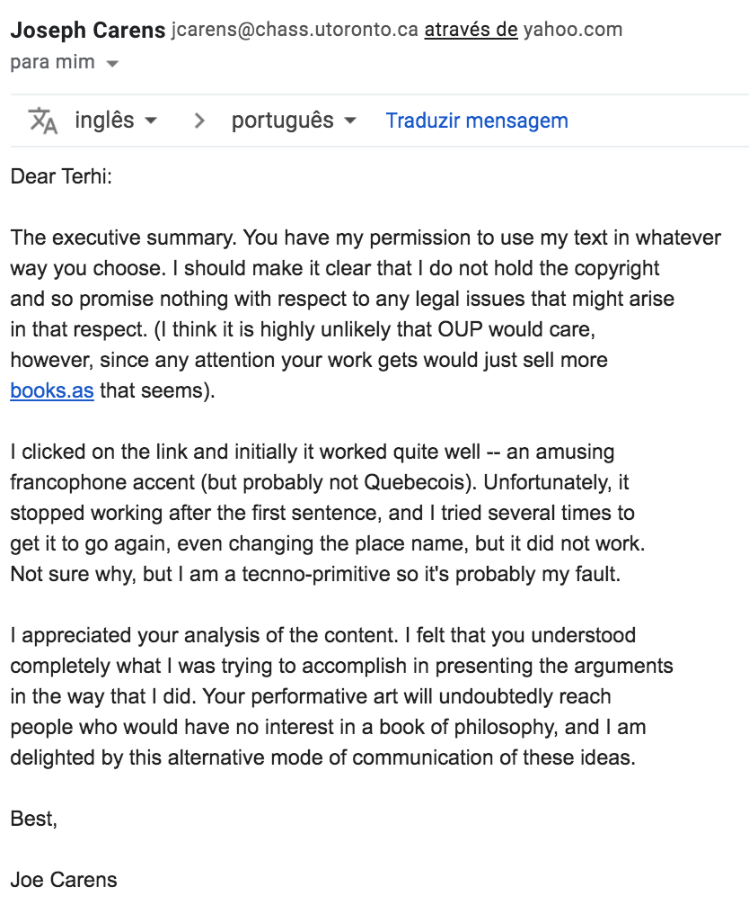

Dimension of authorship in the (co-)creation of interactive art: some examples
Terhi Marttila, University of Porto
This work was financially supported by: Operation NORTE-08-5369-FSE-000049 co funded by the European Social Fund (FSE) through NORTE 2020 - Programa Operacional Regional do NORTE.

PhD candidate (2021?) methodology: practice-based
(thesis title) Playful voice interfaces
I program small interactive artworks that are browser-based and available at terhimarttila.com
Interactive art as digital interactive art, where the input from the participant/recipient/user/player plays a vital role in completing the piece
Because the work is used by people, I can actually transgress my role of artist and think like a designer.
Inside the designers toolbox I find: user research.
Backtrack: my PhD in digital media [in the audiovisual content creation track] is hosted at the faculty of engineering.
So when I defended my research proposal, "practice-based" didn't mean much for the jury. They made me include a component of evaluation.
According to the PhDs and papers that I've come across, "evaluation" in interactive/new media art tends to be interpreted as: surveys.
surveys -> percentages -> conclusions
Two notions that really resonated with me:
In the context of interactive digital art, what is interesting as a result of user research is: “the richness and complexity of unique, individual users, cultural contexts, and resulting variety of interpretations and experiences of the system”
(Höök 2004, 8).
[vs. software design as a service/product and generalizable findings].
Furthermore, Candy suggests that those artists and practitioners who engage in the active evaluation of their interactive artworks, “are inevitably introduced to new ways of thinking about what their goals are and how to achieve them“
(Candy 2014, 33).
[user research as co-creation?].
* Julia Lohman: "an object in an exhibition = you are cut off from the feedback loop"
[I] show your work
and listen to what others have to say about it
[II] video-cued recall:
1) Have the user/participant interact with the piece and record this interaction on video.
2) Then, speak with the person about their experience with the artwork while using the video as a way to help remember what they were experiencing.
[see: Costello, Muller, Amitani and Edmonds 2005; Candy, Amitani and Bilda 2006; Edmonds, Bilda and Muller 2009; Candy 2014]
Evaluation / user research: in fact I've found this process to be an incredible impetus in the creative process / feedback loop itself.
*
we-cannot-take-them-all
Joseph Carens - The Ethics of Immigration (2015), p. 193

Endorsement from Dr. Joseph Carens:
∞
poetry is/as freedom
∞
>>I initially translated Carens' idea very literally:
"if we take in all the Afghans who want to come, we will be overwhelmed"
My supervisor observed that such a close reference to real world (political) events would polarise my users immediately.
This is beyond obvious,
but I had just been focused on translating Carens' proposition into another medium.
The user input gave me a push to evolve the piece in another direction entirely.
Since, I've begun the process of modifying Carens' original text with commentary and poetry of my own.
Speak out
Began with this notion of likening humans to particles, and comparing human migratory movement to:
osmosis: crossing semi-permeable membrane from areas of high concentration of particles to low concentration of particles
diffusion: in gases: particles move randomly and intermingle over time, or in liquids: particles naturally disperse within that liquid, again from areas of high concentration to areas of low concentration
movement == natural world seeks balance
∞
to reach our destiny is like arriving at the dinner table and tucking into a plate of food
∞
>>My then two year old daughter observed the particles flocking to the larger circles.
She said: "oh, they are all going to eat. I want to make more plates for them to eat."
I implemented her idea, and it was immediately obvious that it made the piece way more fun and playful. Previously, all the user could do was observe. With this feature, Speak out becomes a[n impossible] game, where the user can try to fulfil the insatiable desires of the particles by creating places that attract them.
∞
the pull of our desires/destinies/needs/wants leads to physical movement
∞
>>I asked: "can you think of other things that might attract someone to move across the border?"
A user volunteered: "IKEA", adding a hearty laugh, because in the Rovaniemi context, people go across the border to Sweden to shop at IKEA.
... but this was a very important observation. Up until now I had focused on serious factors like freedom or peace, but this comment called my attention to the fact that: the factors that inspire us to physically move our bodies are so very different depending on our life circumstances. For some, it is IKEA that prompts us to cross.
That's why IKEA seems a ridiculous reason to cross a border: because the border between Finland and Sweden is Schengen - it is an open border.
But in fact, there is a border there.
But that user comment inspired me to add IKEA to my list. And as I saw my particles moving to reach IKEA, I realised that my piece was actually about my struggle to articulate and convey migration as movement, and about my desire to portray the relationship between individuals and their desires as one that can result in physical movement [or at least a desire for physical movement] irrelevant of whether there are borders, wether physical or psychological, societal, religous, political, etc.
Incidentally, last weekend, I was not able to physically move myself to "IKEA", even though it is only 15km away and in a zone that I perceive as being part of the Porto metropolitan area, that is, within the zone that I habitually move myself in because of restrictions on movement due to the pandemic.
* Julia Lohman: "incorporate triggers that will pop up in everyday life / to pull people back into the meanings in the piece"
online residency at raum.pt
o) collaboration with a designer: complementing my skillset to think about how to better present the work visually.
o) hover over particles to make them stop so that you can spy on what they are looking for
o) collaboration with the curator: who just renamed the piece to Speak out (working title was particles moving // moving particles)
User research as challenging my artistic motives
Above all, this ongoing dialogue with real people, with users, continues to challenge me [as Candy prophecised] to embrace new ways of thinking about what my goals are, what my work is about what it is that I am trying to say, and is even challenging me to think about the complex phenomenon of human migratory movement from different angles.
Authorship and responsibility
responsibilty: [Dr. Joseph Carens] and myself
authorship: all my ingenious users
BUT: at the end of the day, it is me who has
a) decided which input to incorporate in the piece,
b) spent the tens of hours composing the lines of code, crafting the piece with my own hands.
So what is my takeaway?
To realise that I've come to interpret evaluation
in the context of my written dissertation as an opportunity to describe in detail the significant ways in which user research bleeds into the creative process through the authorship of my users